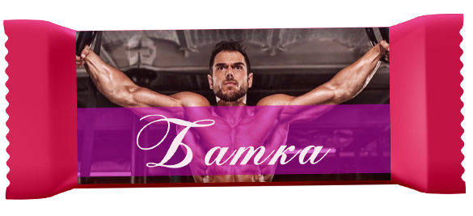

Вафли
-

Вафла Батка
Съдържание: Протеин телешки 60%, напомпин 20%, яки вафлени кори, подсладители. Може да съдържа следи от ядки и фъстъци.
Описание: Тази вафла е идеална за хора прекарващи дълго време във фитнес залите, и за тези които много искат но ги мързи. -

Вафла ЖулиЕта
Съдържание: от Е103 до Е181 включително, без Е150, Е151 и 152. Може да съдържа следи от ядки и фъстъци.
Описание: Отличен вкус, отличен вид и качество, без срок на годност. Идеална за хора без хладилници и хора които ценят външния вид на продукта. -
Вафла Био Майката
Съдържание: Био пълнозърнесто брашно от лимец, био нерафинирана тръстикова захар, био нискомаслено какао на био прах, био слънчогледово олио, био слънчогледов тахан. Може да съдържа следи от био фъстъци. Не съдържа глутен.
Описание: Това е Майката на вафлите. Притежава отличен вкус и висока цена. Подходяща за хипохондрици и хора с алергии. -
Вафла Наков
Съдържание: Червеното хапче, двоичен код , хитрин. Може да съдържа следи от ядки и фъстъци.
Описание: Тази вафла е подходяща за хора занимаващи се в сверата на информационните технологии и най-вече програмисти. При редовна и отговорна консумация, консумиращият може да достигне 8, 16, 32 а някои и до 64bit-ово просветление. -
Вафла Студентска
Съдържание: Неизвестно. Отговаря на всички европейски стандарти. Може и да не съдържа следи от ядки и фъстъци.
Описание: Обемна и плътна вафла, без особени вкусови качества на достъпна цена. Само две вафли са достатъчни да ви заситят колкото стандартен обяд. Подходяща при махмурлук. -
Вафла Измерение
Съдържание: Психоактивни вещества, анасон, родопски билки. 100% натурален продукт. Може да съдържа следи от ядки и фъстъци.
Описание: Една вафла и си там. Уникален вкус-пространство. За хора търсещи нови усещания. -
Вафла Мандала
Съдържание: Аура бустер, фън шуй камъчета, натурален планински кристал на прах 2%. Може да съдържа следи от ядки и фъстъци.
Описание: Вафла с характерна консистенция. Изкючителен катализатор за душевно израстване и вътрешен мир. Истинска наслада за вашите чакри. Не се препоръчва за хора с чувствителен стомах.
за нас
Фабриката за производство на вафли се намира в индустриалната част на квартал Изгрев, гр.София. Самата постройка има богата история в производството на захарни изделия. Нашата мисия е да възродим ръчното производство на вафли. За целта сме назначили високо квалифициран персонал, преминал две специализации в Люцерн, Швейцария. Фирмата е сертифицирана по IFS стандарт за безопасност на храните.